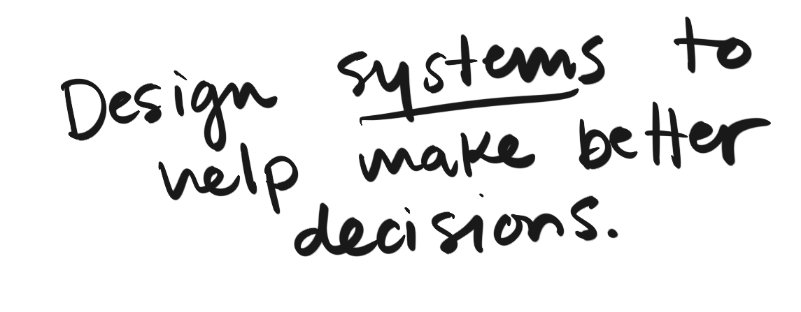
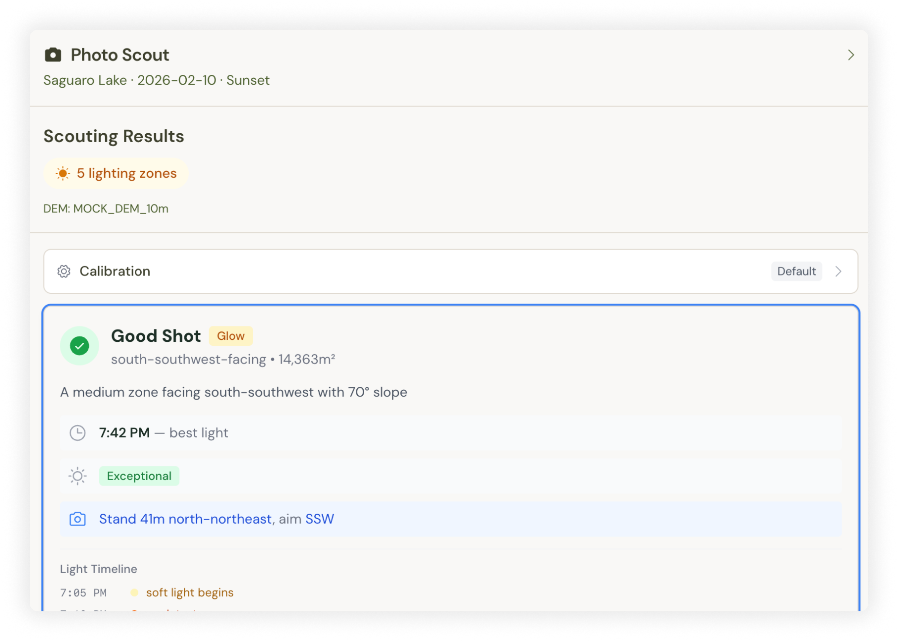

Takeaway 01
Start with some kind of plan or you will spend a lot of time regressing or redoing work. Seems obvious, but it's easy to get carried away with ideas.
Explore how AI tools and modern APIs extend capabilities as a Product Designer. AI functioned as a practical build partner for rapid exploration of system architecture, API design, and data transformations.
Road-based travelers, dispersed camping enthusiasts, landscape photographers, and public lands explorers who need smarter location intelligence, not just listings.

Outdoor travelers rely on static apps, outdated reports, and guesswork
Tools are fragmented and time-consuming to cross-reference
Decision fatigue from juggling multiple apps with conflicting information
"Good on paper, bad in reality" locations with no way to verify quality
No tools account for lighting conditions or photography timing
Road conditions and access restrictions poorly documented

The earliest builds were technically functional but visually generic — the kind of layout AI tools tend to converge on when given loose direction. Style guides, hierarchy, and refined micro-interactions still need a designer's eye.

I started with simple heuristics — combining public land data with road networks to identify dead ends and intersections where dispersed campsites often appear. From there, I designed and built scoring systems that surface what actually matters to travelers and photographers.
Predicts optimal lighting conditions using sun azimuth calculations, weather patterns, and terrain orientation data.
Evaluates landscape diversity, elevation changes, water features, and geological interest to surface hidden gems.
Assesses road conditions, land ownership boundaries, seasonal restrictions, and vehicle requirements.
Surfaces the best windows for visiting based on weather, seasonal conditions, and golden hour calculations.




Michelle Taylor — Product Designer
View RoamsWild App